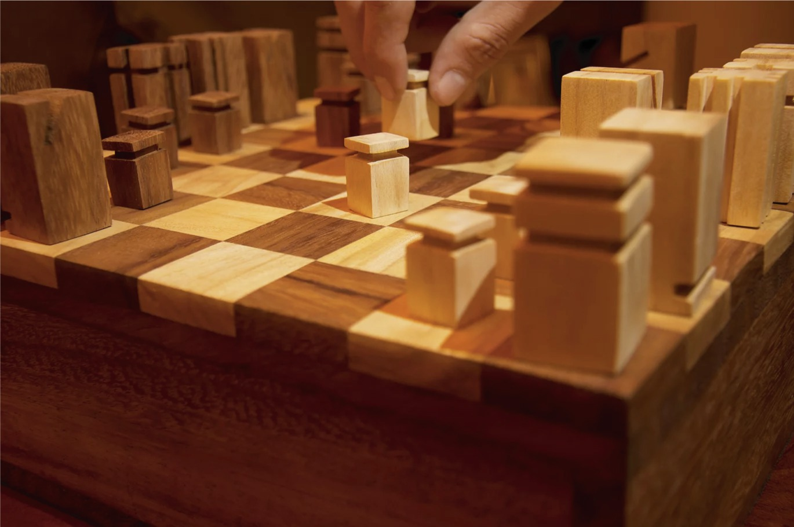
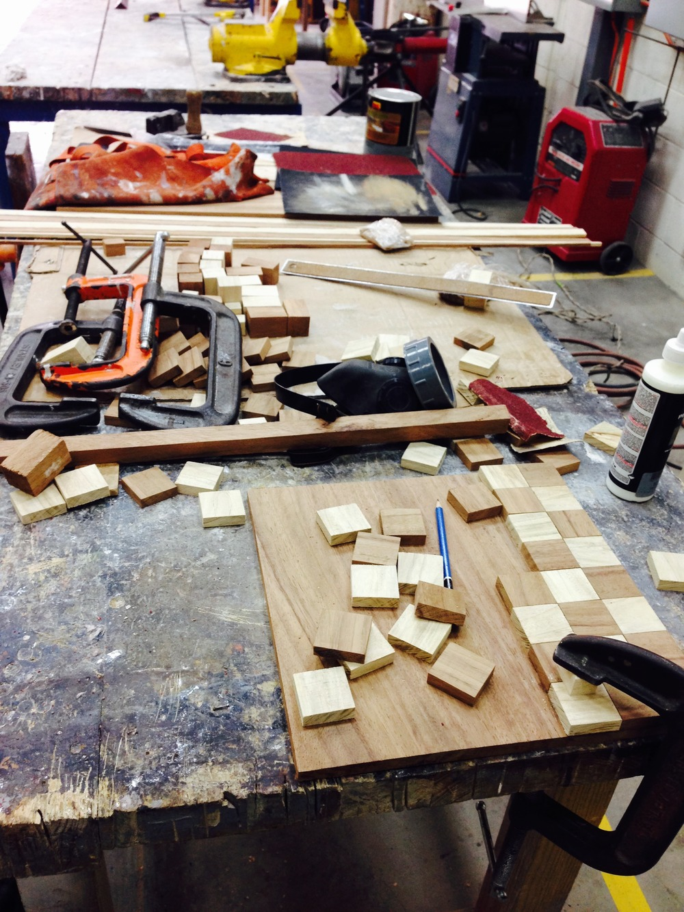
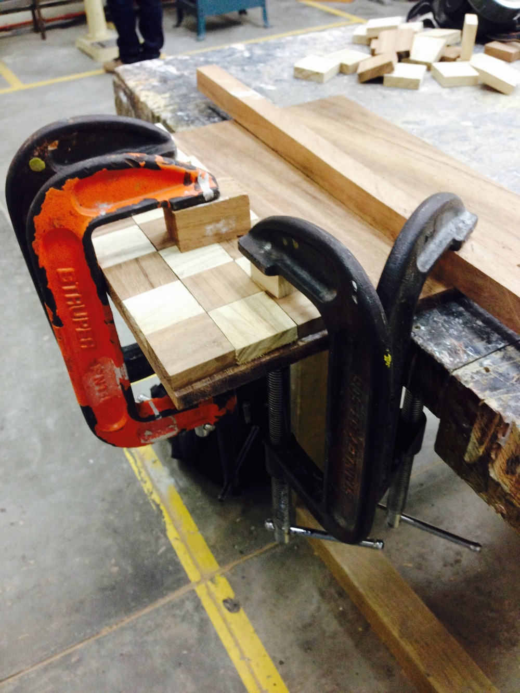
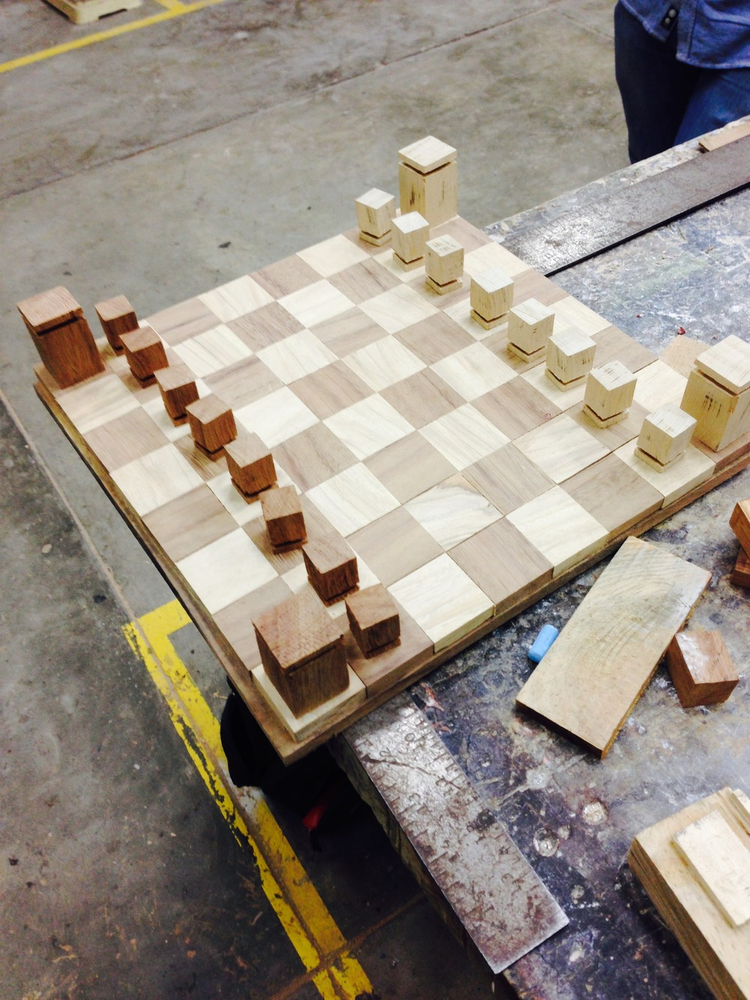
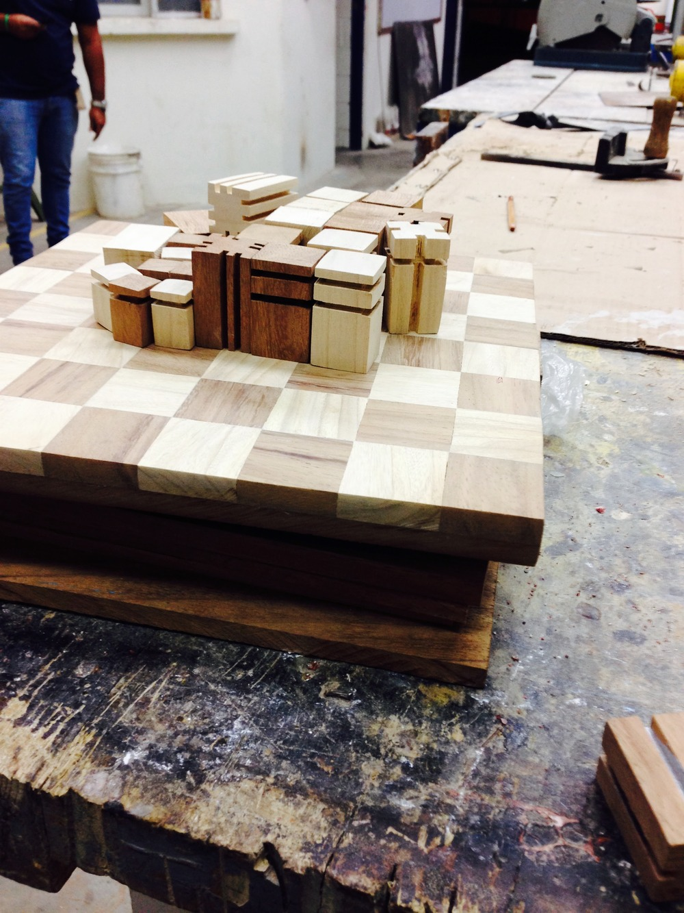
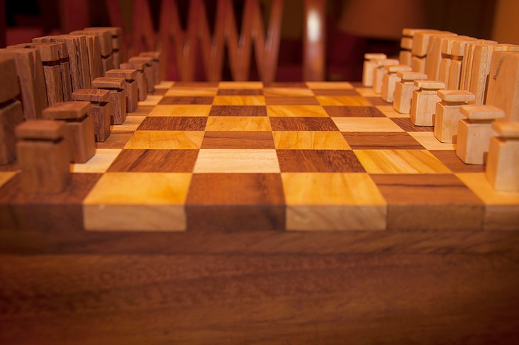
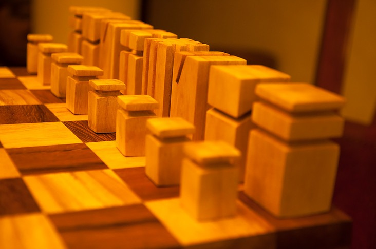
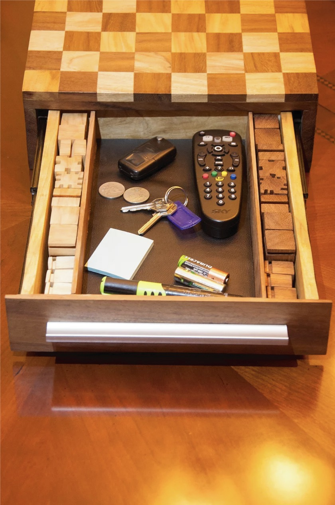
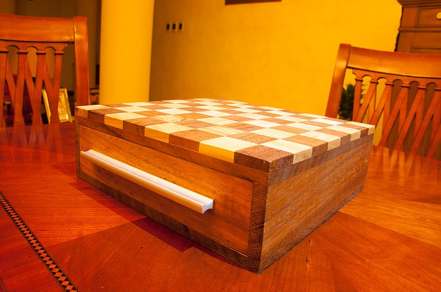
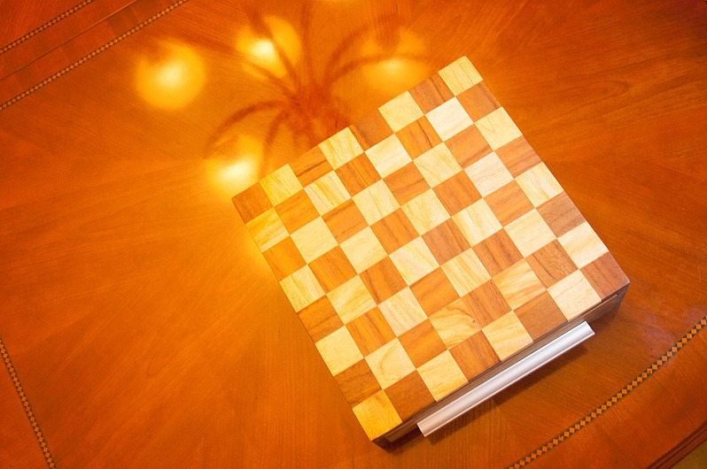

Una mesa de centro pensada tanto como mueble como tablero de ajedrez. Quería un tablero con un carácter geométrico fuerte, así que le di a cada pieza su propio corte, lo suficientemente distinto para diferenciar los dos bandos de un vistazo, y las formé para que todo el juego se guarde en sus propios compartimentos una vez terminada la partida.

El tablero empezó como madera en bruto, cortada en cuadros individuales en la sierra de mesa, y después pegada cuadro por cuadro hasta formar la superficie de juego. Las piezas vinieron después, cada una formada y cortada a mano hasta tener su propia silueta, algo que se puede distinguir al tacto tanto como a la vista.




El tablero está hecho con dos maderas: conacaste y palo blanco. El conacaste es suave, con vetas marcadas y un tono oscuro e intenso, y el palo blanco es más duro, más claro, con una veta más sutil. Puestas una al lado de la otra, le dan al tablero y a las piezas un contraste natural entre los dos bandos, sin necesidad de tinte ni tintura.


El tablero funciona también como su propio estuche. Debajo de la superficie de juego hay una gaveta forrada en tela donde cada pieza tiene su lugar, así que el juego que hace un momento estaba sobre la mesa se guarda en algo que se ve igual de bien cerrado. El acabado son varias rondas de lijado fino y una capa ligera de barniz mate transparente, suficiente para proteger la madera del polvo y el agua sin tapar la veta.


